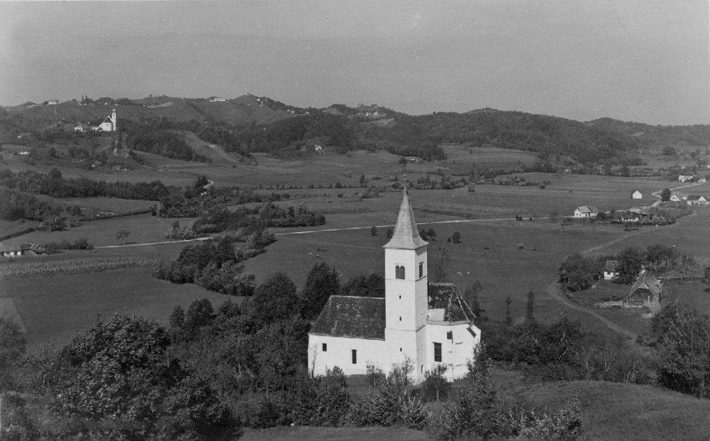

슬로베니아 포들레흐니크, 학교·청사 지붕 태양광으로 공공시설 묶어 공동체 자가공급…청사 겨울 전기요금 약 2,500유로가 123유로 남짓으로

두 설비 합계 200kW 남짓에 사업비 25만5,000유로 조금 못 미쳐, 보조금 15만6,000유로 조금 못 미쳐…하수처리장·펌프장·충전소까지 전기 대고 연 효과 약 4만2,000유로 잠정 추산
슬로베니아 북동부 포드라비예 지방의 작은 지자체 포들레흐니크(Podlehnik)가 초등학교와 청사 지붕에 세운 태양광 2기로 여러 공공시설의 전기요금을 함께 줄이고 있다. 지난해 말 세운 두 설비 가운데 학교 태양광은 학교가 직접 쓰고, 청사 태양광은 '공동체 자가공급' 방식으로 청사와 Podlehnik 6b 번지 건물, 하수처리장, 지하차도 펌프장, 전기차 충전소에 전기를 나눠 댄다. 두 설비 합계 용량은 200kW 남짓, 사업비는 25만5,000유로 조금 못 미치며, 그중 15만6,000유로 조금 못 미치는 돈을 보조금으로 받고 9만9,000유로 조금 못 미치는 나머지(전체의 39% 조금 못 미침)를 지자체 예산으로 댔다. 새 정산 방식이 올봄 시작된 뒤 청사 전기요금은 예전 겨울철 약 2,500유로에서 최근 123유로 남짓으로, 하수처리장은 월 최대 170유로에서 30유로 남짓으로, 펌프장은 60유로에서 10유로 남짓으로 내려갔는데, 지자체는 최근 고지서가 난방철 것이 아니어서 바로 견주기는 어렵다고 덧붙였다. 지자체는 요금 절감과 잉여 전력 판매 수입을 합친 두 설비의 연간 효과를 약 4만2,000유로로 보고 자체 부담은 2~3년, 전체 사업비는 5~7년이면 회수될 것으로 내다봤으며, 정확한 값은 첫 1년 운전이 끝나야 나온다고 밝혔다. 청사는 다음 단계로 올해와 내년 예산을 들여 보일러실을 공기-물 히트펌프 방식으로 바꿔 전기 사용을 더 줄일 계획이다.
시민에너지 관점
9만9,000유로에 조금 못 미치는 자체 부담을 2~3년 안에 거둘 수 있다는 계산은, 공공건물 지붕이 버려진 공간이 아니라 주민 세금을 아끼는 자산이 될 수 있음을 보여 준다. 작은 지자체에는 돈도 기술 인력도 없다는 걱정이 있지만, 포들레흐니크는 사업비의 6할 남짓을 보조금으로 메우고 한 설비의 전기를 하수처리장·펌프장·충전소가 함께 쓰게 하는 방식으로 규모의 한계를 넘었다. EU가 2018년 재생에너지지침에서 재생에너지공동체를 법적 주체로 인정한 만큼, 다음 단계는 공공시설을 넘어 주민 가정도 같은 설비의 주인으로 참여하게 하는 일이다. 국내에서도 학교·청사·처리장 지붕 태양광을 지자체와 주민이 함께 소유하고 전기를 나눠 쓸 수 있도록 공공부지 태양광 제도를 손봐야 한다.
출처: Svet24.si 2026-11-05 Hojka Berlič 원문 보기
スロベニア・ポドレフニク、学校と庁舎の屋根の太陽光で公共施設をまとめて共同体自家供給…庁舎の冬の電気代は約2,500ユーロから123ユーロ余りに
2基合計200kW余り、事業費25万5,000ユーロ弱のうち補助金15万6,000ユーロ弱…下水処理場・ポンプ場・充電スタンドにも電力を供給、年間効果は暫定で約4万2,000ユーロ
スロベニア北東部ポドラヴィエ地方の小さな自治体ポドレフニク（Podlehnik）が、小学校と庁舎の屋根に設けた太陽光発電2基で、複数の公共施設の電気料金をまとめて引き下げている。昨年末に設置した2基のうち、学校の設備は学校が自家消費し、庁舎の設備は「共同体自家供給」の方式で、庁舎のほかPodlehnik 6b番地の建物、下水処理場、地下道のポンプ場、電気自動車の充電スタンドに電力を分け合っている。2基の合計出力は200kW余り、事業費は25万5,000ユーロ弱で、うち15万6,000ユーロ弱を補助金でまかない、残る9万9,000ユーロ弱（全体の39%弱）を自治体予算から出した。新しい精算方式が今春始まって以降、庁舎の電気代はかつての冬季の約2,500ユーロから直近では123ユーロ余りに、下水処理場は月最大170ユーロから30ユーロ余りに、ポンプ場は60ユーロから10ユーロ余りに下がったが、自治体は直近の請求書が暖房期のものではないため単純には比べにくいと付け加えた。自治体は料金の節減と余剰電力の売電収入を合わせた2基の年間効果を約4万2,000ユーロと見込み、自己負担分は2～3年、事業費全体は5～7年で回収できるとしたうえで、正確な数字は運転1年目が終わってから出ると説明した。庁舎では次の段階として、今年と来年の予算でボイラー室を空気・水ヒートポンプ方式に切り替え、電力使用をさらに減らす計画だ。
市民エネルギーの視点
9万9,000ユーロ弱の自己負担を2～3年で取り戻せるという試算は、公共建築の屋根が使われていない空間ではなく、住民の税金を節約する資産になりうることを示している。小さな自治体には資金も技術者もないとの懸念もあるが、ポドレフニクは事業費の6割余りを補助金で埋め、1基の電力を下水処理場・ポンプ場・充電スタンドで分け合う方式で規模の限界を乗り越えた。EUが2018年の再生可能エネルギー指令で再エネ共同体を法的主体として認めた以上、次の段階は公共施設にとどまらず、住民の家庭も同じ設備の持ち主として参加できるようにすることだ。韓国でも、学校・庁舎・処理場の屋根の太陽光を自治体と住民が共同で所有し電力を分け合えるよう、公共用地の太陽光制度を見直すべきだ。
出典: Svet24.si 2026-11-05 Hojka Berlič 原文を読む
斯洛文尼亚波德莱赫尼克用学校和政府楼屋顶光伏把公共设施捆绑成社区自给…政府楼冬季电费从约2,500欧元降至123欧元出头
两套设备合计200千瓦出头，投资不到25.5万欧元，其中补助不到15.6万欧元…还为污水处理厂、泵站和充电站供电，年效益初步估算约4.2万欧元
斯洛文尼亚东北部波德拉维耶地区的小市镇波德莱赫尼克（Podlehnik），利用建在小学和市镇政府楼屋顶上的两套光伏设备，同时降低了多处公共设施的电费。两套设备于去年底建成，学校的光伏供学校自用，政府楼的光伏则以“社区自给”方式，为政府楼以及Podlehnik 6b号建筑、污水处理厂、地下通道泵站和电动汽车充电站分配电力。两套设备合计装机200千瓦出头，投资不到25.5万欧元，其中不到15.6万欧元来自补助，其余不到9.9万欧元（略低于总额的39%）由市镇预算承担。今年春天开始采用新的结算方式后，政府楼电费从以往冬季的约2,500欧元降到最近的123欧元出头，污水处理厂从每月最多170欧元降到30欧元出头，泵站从60欧元降到10欧元出头；市镇方面补充说，最近的账单并非取暖季，难以直接比较。市镇估计，两套设备把电费节省和余电销售收入加在一起，年效益约4.2万欧元，自筹部分2至3年、全部投资5至7年即可收回，准确数字要等第一年运行结束后才能得出。政府楼下一步将用今明两年的预算把锅炉房改为空气-水热泵系统，进一步减少用电。
市民能源视角
不到9.9万欧元的自筹资金两三年就能收回，这一测算说明公共建筑的屋顶不是闲置空间，而可以成为替居民节省税金的资产。有人担心小市镇既没钱也没技术人员，但波德莱赫尼克用补助填补了六成多的投资，并让一套设备的电力由污水处理厂、泵站和充电站共同使用，突破了规模的限制。既然欧盟在2018年的可再生能源指令中已确认可再生能源社区的法律主体地位，下一步就是让居民家庭也作为同一设备的主人参与进来，而不只限于公共设施。韩国也应修改公共用地光伏制度，让学校、政府楼和处理厂屋顶的光伏由地方政府与居民共同拥有、共享电力。
来源: Svet24.si 2026-11-05 Hojka Berlič 查看原文
Slovenia's Podlehnik links public buildings through school and town hall rooftop solar for community self-supply; town hall's winter power bill falls from about 2,500 euros to just over 123
Two systems total just over 200 kW and cost just under 255,000 euros, with just under 156,000 euros in grants; they also supply a wastewater plant, pumping station and charging point, with an estimated annual benefit of about 42,000 euros
Podlehnik, a small municipality in Slovenia's north-eastern Podravje region, is cutting electricity bills across several public facilities with two solar systems on the roofs of its primary school and town hall. Of the two systems built at the end of last year, the school's covers its own consumption, while the town hall's works as "community self-supply", sharing power among the town hall, premises at Podlehnik 6b, the wastewater treatment plant, an underpass pumping station and an electric-vehicle charging point. The two systems have a combined capacity of just over 200 kW and cost just under 255,000 euros, of which just under 156,000 euros came from grants and just under 99,000 euros, slightly less than 39% of the total, from the municipal budget. Since the new billing arrangement began this spring, the town hall's bill has dropped from about 2,500 euros in past winters to just over 123 euros most recently, the wastewater plant's from up to 170 euros a month to just over 30 euros, and the pumping station's from 60 euros to just over 10 euros, though the municipality noted that the latest bill is not from the heating season and is hard to compare directly. The municipality puts the combined annual benefit of the two systems, counting lower bills and income from surplus power sold, at about 42,000 euros, and expects its own share to be recovered in two to three years and the full investment in five to seven, adding that precise figures will come only after the first full year of operation. As a next step, the town hall plans to convert its boiler room to an air-to-water heat pump system, funded from this year's and next year's budgets, to cut electricity use further.
Citizen Energy View
Recovering a municipal outlay of just under 99,000 euros within two to three years shows that public roofs are not idle space but assets that save residents' taxes. There are worries that small municipalities have neither money nor technical staff, but Podlehnik covered a little over 60% of the cost with grants and overcame its small scale by letting one system serve a wastewater plant, pumping station and charging point together. Since the EU recognised renewable energy communities as legal entities in its 2018 Renewable Energy Directive, the next step is to let households, not only public buildings, join as co-owners of the same systems. Korea too should revise its rules for solar on public land so that local governments and residents can jointly own rooftop solar on schools, offices and treatment plants and share the power it produces.
Source: Svet24.si 2026-11-05 Hojka Berlič Read the original